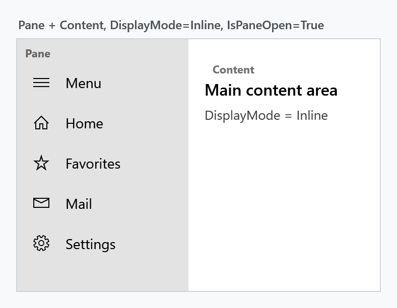
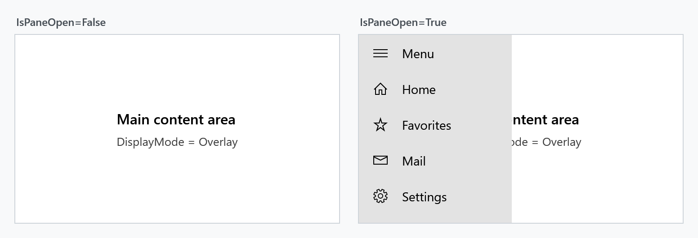
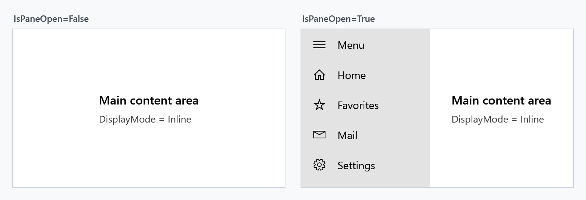
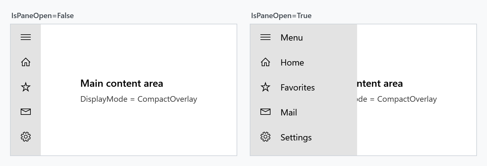
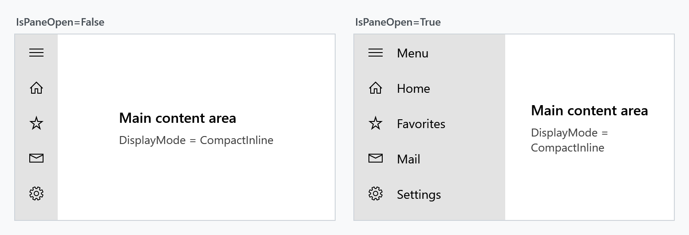
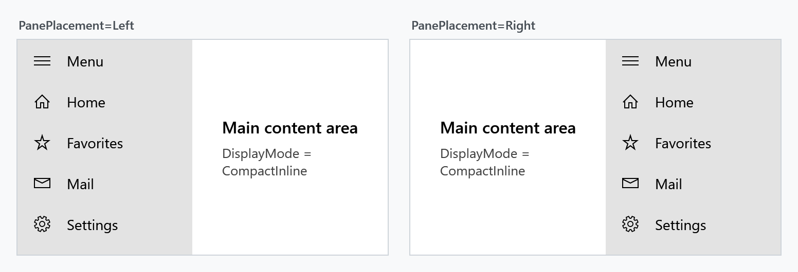
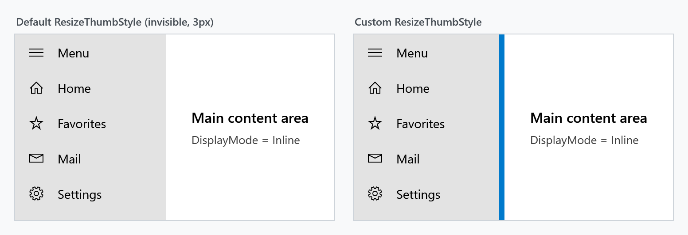
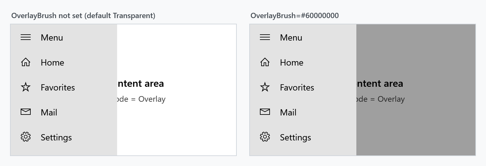

The SplitView is a container with two areas: a pane that can be expanded and collapsed, and the content next to it. It is the control behind the navigation drawer pattern known from Windows 10/11 apps — a narrow strip of icons that slides open into a full menu.

Basic usage
SplitView derives from Control, not from ContentControl. Both Pane and Content are of type UIElement, so they take a single element each — not arbitrary objects. Plain text has to be wrapped in a TextBlock.
Content is the XAML content property, so the child element of a SplitView becomes the content area:
<mah:SplitView x:Name="SplitView"
DisplayMode="CompactInline"
IsPaneOpen="True"
CompactPaneLength="48"
OpenPaneLength="220">
<mah:SplitView.Pane>
<StackPanel>
<Button Content="Home" />
<Button Content="Settings" />
</StackPanel>
</mah:SplitView.Pane>
<!-- everything else is the Content -->
<Grid>
<TextBlock Text="Main content area" />
</Grid>
</mah:SplitView>
Toggling the pane is a matter of flipping IsPaneOpen, which binds nicely to a ToggleButton:
<ToggleButton IsChecked="{Binding IsPaneOpen, ElementName=SplitView}"
Content="Menu" />
DisplayMode
DisplayMode decides two things at once: whether the collapsed pane stays partly visible, and whether the open pane pushes the content aside or covers it.
| Value | Collapsed | Open |
|---|---|---|
Overlay (default) |
pane is hidden completely | covers the content, no layout change |
Inline |
pane is hidden completely | pushes the content aside, takes up layout space |
CompactOverlay |
CompactPaneLength stays visible |
covers the content |
CompactInline |
CompactPaneLength stays visible |
pushes the content aside |
The Compact* modes are what you want for the icon-strip navigation pattern: lay the pane content out so that the first CompactPaneLength pixels hold the icons, and the labels appear as the pane opens.
Overlay

Inline

CompactOverlay

CompactInline

In the two overlay modes the pane is closed again when the user clicks the content area next to it (light dismiss). The inline modes have no such behaviour.
PanePlacement
PanePlacement puts the pane on the Left (default) or on the Right.

Pane lengths
| Property | Effective default | Meaning |
|---|---|---|
OpenPaneLength |
320 |
width of the pane while it is open |
CompactPaneLength |
48 |
width that stays visible in the Compact* modes |
MinimumOpenPaneLength |
100 |
lower bound for OpenPaneLength |
MaximumOpenPaneLength |
500 |
upper bound for OpenPaneLength |
OpenPaneLength is coerced into the range described by the other three, and additionally never exceeds the control's own ActualWidth. In the Compact* modes the lower bound is the larger of CompactPaneLength and MinimumOpenPaneLength — an open pane can never be narrower than its own compact strip.
Resizing the open pane
Set CanResizeOpenPane to True and the user can drag the edge between pane and content to change OpenPaneLength, within the minimum and maximum above.
The drag handle is a MetroThumb styled by ResizeThumbStyle. Its default style, MahApps.Styles.MetroThumb.SplitView.Resize, is 3px wide with a transparent background — the only hint the user gets is the resize cursor. Supply your own style to make it visible:

<mah:SplitView CanResizeOpenPane="True"
MinimumOpenPaneLength="120"
MaximumOpenPaneLength="400">
<mah:SplitView.ResizeThumbStyle>
<Style TargetType="mah:MetroThumb"
BasedOn="{StaticResource MahApps.Styles.MetroThumb.SplitView.Resize}">
<Setter Property="Background" Value="{DynamicResource MahApps.Brushes.Accent}" />
<Setter Property="Width" Value="6" />
</Style>
</mah:SplitView.ResizeThumbStyle>
<!-- Pane and Content -->
</mah:SplitView>
Brushes
PaneBackground and PaneForeground colour the pane area. OverlayBrush is painted over the content while the pane is open in one of the overlay modes; it is Transparent by default, so nothing dims unless you ask for it.

<mah:SplitView DisplayMode="Overlay"
OverlayBrush="#60000000"
PaneBackground="{DynamicResource MahApps.Brushes.Accent}"
PaneForeground="{DynamicResource MahApps.Brushes.IdealForeground}" />
Events
PaneClosing is raised before the pane closes and can veto it through SplitViewPaneClosingEventArgs.Cancel. PaneClosed follows once the pane actually closed.
private void SplitView_PaneClosed(object sender, EventArgs e)
{
this.viewModel.IsNavigationVisible = false;
}
Cancelling leaves IsPaneOpen behind
Vetoing keeps the pane on screen and suppresses PaneClosed, but it does not put IsPaneOpen back: the property stays false while the pane is still drawn open. And because the value never changed back, assigning false a second time is a no-op — PaneClosing is not raised again, so the veto only ever works once.
Restore the property yourself whenever you cancel:
private void SplitView_PaneClosing(object sender, SplitViewPaneClosingEventArgs e)
{
if (!this.viewModel.HasUnsavedChanges)
{
return;
}
e.Cancel = true;
// Bring IsPaneOpen back in sync with the pane that stayed open. Deferred,
// because we are inside the changed callback of that very property.
var splitView = (SplitView)sender;
splitView.Dispatcher.BeginInvoke(new Action(
() => splitView.SetCurrentValue(SplitView.IsPaneOpenProperty, true)));
}
Property reference
| Property | Type | Effective default |
|---|---|---|
CanResizeOpenPane |
bool |
False |
CompactPaneLength |
double |
48 |
Content |
UIElement |
null |
DisplayMode |
SplitViewDisplayMode |
Overlay |
IsPaneOpen |
bool |
False |
MaximumOpenPaneLength |
double |
500 |
MinimumOpenPaneLength |
double |
100 |
OpenPaneLength |
double |
320 |
OverlayBrush |
Brush |
Transparent |
Pane |
UIElement |
null |
PaneBackground |
Brush |
SystemColors.ControlLightBrushKey |
PaneForeground |
Brush |
MahApps.Brushes.Text |
PanePlacement |
SplitViewPanePlacement |
Left |
ResizeThumbStyle |
Style |
MahApps.Styles.MetroThumb.SplitView.Resize |
TemplateSettings |
SplitViewTemplateSettings |
read-only |
| Event | Event args | Purpose |
|---|---|---|
PaneClosing |
SplitViewPaneClosingEventArgs |
raised before closing, can cancel |
PaneClosed |
EventArgs |
raised after closing |
"Effective default" is the value a SplitView actually starts with. Most of these come from the control's default style rather than from the dependency property metadata, and the two do not always agree — the values above are the ones that apply in practice.
TemplateSettings exposes the lengths the control template needs as TemplateBinding sources. It is only relevant when you retemplate the SplitView.
Notes on data binding
The pane is attached with AddLogicalChild, which does not propagate the DataContext on its own. SplitView compensates for that and pushes its own DataContext onto the pane whenever it changes, so bindings inside the pane resolve against the same view model as the rest of the control.